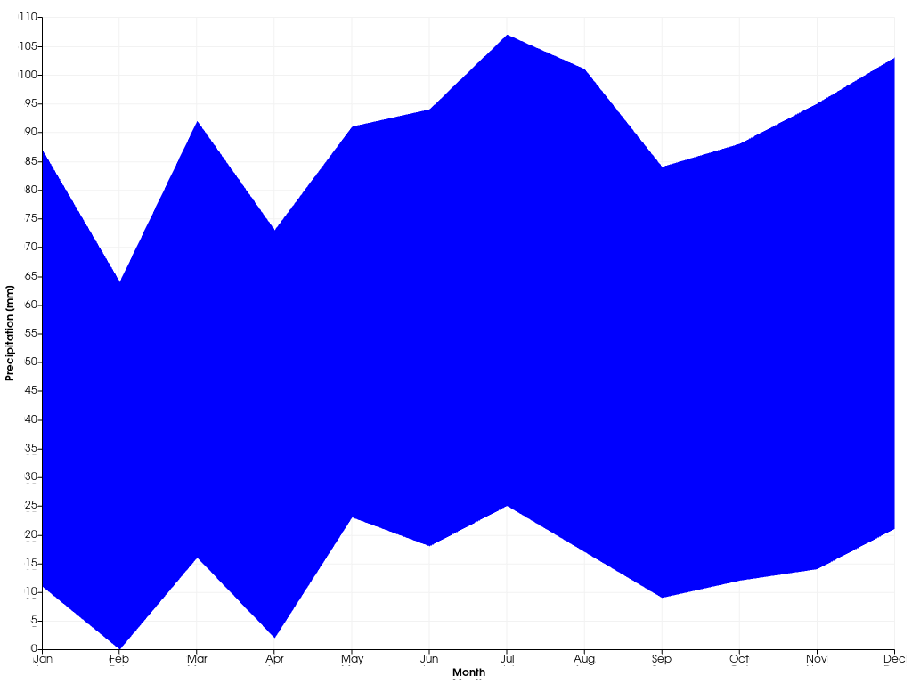

pyvista.plotting.charts.AreaPlot#
- class AreaPlot(x, y1, y2=None, color='b', label='')[source]#
Class representing a 2D area plot.
Users should typically not directly create new plot instances, but use the dedicated 2D chart’s plotting methods.
- Parameters
- xarray_like
X coordinates of the points outlining the area to draw.
- y1array_like
Y coordinates of the points on the first outline of the area to draw.
- y2array_like,
optional Y coordinates of the points on the second outline of the area to draw. Defaults to a sequence of zeros.
- color
color_like,optional Color of the area drawn in this plot. Any color parsable by
pyvista.Coloris allowed. Defaults to"b".- label
str,optional Label of this plot, as shown in the chart’s legend. Defaults to
"".
Examples
Create an area plot showing the minimum and maximum precipitation observed in each month.
>>> import pyvista >>> import numpy as np >>> x = np.arange(12) >>> p_min = [11, 0, 16, 2, 23, 18, 25, 17, 9, 12, 14, 21] >>> p_max = [87, 64, 92, 73, 91, 94, 107, 101, 84, 88, 95, 103] >>> chart = pyvista.Chart2D() >>> _ = chart.area(x, p_min, p_max) >>> chart.x_axis.tick_locations = x >>> chart.x_axis.tick_labels = ["Jan", "Feb", "Mar", "Apr", "May", ... "Jun", "Jul", "Aug", "Sep", "Oct", ... "Nov", "Dec"] >>> chart.x_axis.label = "Month" >>> chart.y_axis.label = "Precipitation [mm]" >>> chart.show()
 Methods
This method can be used to override a VTK class with a Python subclass.
Toggle the plot's visibility.
AreaPlot.update(x, y1[, y2])Update this plot's points, outlining the area to draw.
Attributes
Brush object controlling how shapes in this plot are filled.
Return or set the plot's color.
Return or set the this plot's label, as shown in the chart's legend.
Return or set the line style of all lines drawn in this plot.
Return or set the line width of all lines drawn in this plot.
Pen object controlling how lines in this plot are drawn.
Return or set the this plot's visibility.
Retrieve the X coordinates of the points outlining the drawn area.
Retrieve the Y coordinates of the points on the first outline of the drawn area.
Retrieve the Y coordinates of the points on the second outline of the drawn area.